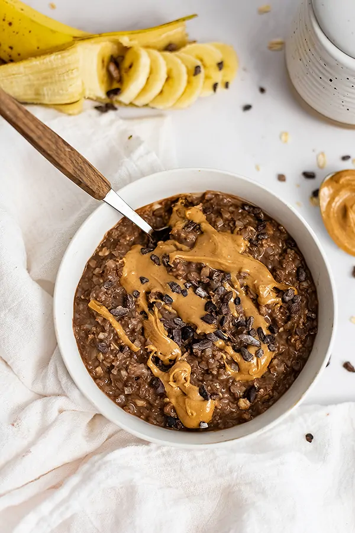

Proats

Description
Looking for sweet and tasty recipe which is high in protein? Proats is the one for you. quick, easy and enjoyable.
Ingredients
- Quaker oats - 100gms
- Milk - 100ml
- 1 cup water
- Avvater Chocolate Hazelnut whey protein - 1 scoop
- Artificial sweetner
- Peanut butter - 20gms
- banana - 2/3
- raisins - 20gms
Steps
Follow the steps carefully
- Take 100 gms of quaker oats in a cooking container.
- Add 100 ml milk.
- Add a cup of water.
- cook for 3-4 mins on low to medium heat.
Protip: Keep stiring when cooking to get a better texture.
- After its properly cooked add it to another container.
- Add Avvatar why protein to the cooked oats before they cool down.
- Add artificial sweetner of your choice.
- Mix them well. No lumps should remain after mixing.
- Add 20g or a tablespoon of pintola peanut butter and mix.
- Chop 2 or 3 bananas and add them to the oats.
- Add 20gms of raisins to the oats.
- Mix everything well and voila your protein oats are ready to eat.
Return to Home page